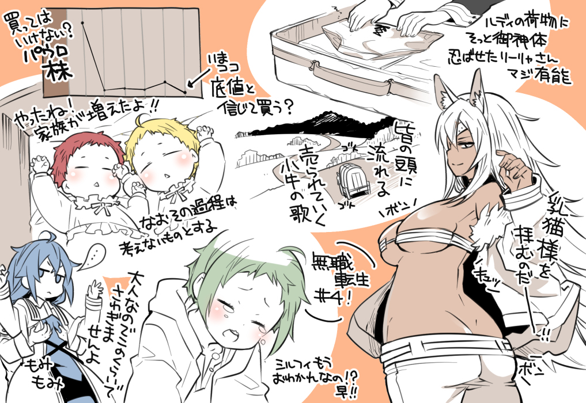

1.
>vexed because they thought he wet the bed
>the 30(0 slashed so 3) year old going baaa~n
>the diaper has nice roundedness
>yes! Shota penis
>pantsu!
>ate a lot of sweet things
2.
>prevoius life man did bridges?
>niece's bathroom video
>the video's truly bad...
>brother's just rational enough to not hit him with the metal bat
>PANTSU!
>nanahoshi san'a making a forceful face huh
>as I thought, bridgette's the one guilty (don't understand the reference)
>roxy chan's pajamas are truly cute haahaa (didn't see her doing that at all)
3.
>ok, shota penis
>the mushroom that indicates what we are talking about
>starting from 5 years old, worshipping the divine
>(formerly pants) DIVINE SACRAMENT
>the man who stood as the shield for the sake of broadcasting rights, rudy
>(can't read what it says)
>the ears wriggle, CUTE
4.

>lilia's truly capable, secretly hiding the divine sacrament in rudy's luggage
>it's here right now. Thinking it's bottomed out, should we buy it? We shouldn't? PAUL'S STOCKS
>worshipping the titty cat
>the one going in everyone's head, the song of a young boy being sold off
>already bidding farewell to syplhie!? Too fast!
>you did it! Family becme bigger!
>can't do that going further
>i won't make a fuss at just this because I am an adult
5.
>ta~maya~!
>could it be this world's first fireworks?
>the difference between eris behaving like she was used to killing people and the rudy's first time
>SAD NEWS! DIVINE SACRAMENT'S LEFT AT HOME!!
>(wild animal sounds)
>ghyslaine nee-chan's super cool!!
>pikon~! flag's up! Dere-get!!
>you did it rudy chan! Lady's in the cow girl position!!!
>kemomimi maid
>I am truly envious you know
6.
>he also made paul, rudy's a good child
>laputa really exists!!
>going out dress,cuuuuuuuute!!
>nya~n nya~n nya~n
>this person who gets to rest his back against ghyslaine nee-chan's boobs
>what should be his prize? Punish him (should he be dealt with)?
> aphrodisiac
>ルパンダイブ pun on rudy stealing the panties
7.
>eyes made when someone sees a roach
>sniff sniff, master's smell~~
>only those who never peeped from below, please stone him
>boobs= one up, one down
>zanobaaaaaaaaa!!
>nicely burnt
>piko~n (sound of a flag) please let cute girls fall from sky
>OK!
>double toothed smile, CUUUUUUUTEEEE...
>the tense lady
>alright, ghyslaine nee-chan's cool, cool, cool, cool (bit of exasperation)
8.
>an unexpected sylphie chan, changed voice
>an unexpected pergius
>an unexpected company president
>an unexpected kishirika
>an unexpected "almanfi of the unexpected"
>an unexpected BAM!! continued next episode!! eeeeh!?
>nicely growing
>are you saying there are no pants!!
>it's grown!!
>the sword king onee-chan who lets you touch her butt easily
>it's great when a girl bunches up all her long hair on the front... sexy
9.
anon's pun explanation -
>facial pantomime
>father in law
>ara~ara~maa~maa~
>no
>disgusting taste
>ueeeh, ueeeh! (Baby crying), ghyslaine where are you!!
>bagworm
>bobobo-boreas
>piko piko (blipblop sounds for her swinging knees)
>shit eating grin "i will let you become my friend"
>boss! There's a girl (+1) falling from sky!!
>yo, it's me hitogami!
>fishy looking...
>just the tip!! Only just the tip, ok, ok (pun. It's about giving him directions for what to do just right after, doesn't translate nicely)
>just the tip!! Only just the tip, ok, ok (pun. It's about giving him directions for what to do just right after, doesn't translate nicely)
Yea though let’s explain the neta cause it’s funny and amusing. I’ll help out:
Let’s say you want to have sex and you’re refused, or say you want to do it raw without condoms but it doesn’t feel like the woman would permit it, you use “just the tip ok? Just the tip I swear”
It’s basically used as an excuse/chance to make someone agree with you or in this case to have sex because obviously once you have the tip of your penis inside the vagina the rest is easy and you can just fuck.
This neta got really popular after a certain comedy show on TV popularized it.
Which is how Rudeus’s uses it as a retort to Hitogami’s advice as he was still getting adviced in the end didn’t regardless of “just the tip” or 先っぽだけ if anons get my gist
10.
>search the cat plea~~~se
>no damage
>the girl that always go with fist (pun referring to rock paper scissors)
>the overwhelming, cat eared eris is justice
>the guy who buys nice dresses even if he doesn't have money, that's rudy
>rikarisu town is here!
>nokoparaaa!! Blaze?
>first visit to hello work!! (There's some pun about hello work in there I can't understand)
>paper, cloth and wood's probably precious, so that's why they are using clay tablets, right... yeah, that should be it
11.
>while the serious talk's going on, eris is playing and trying to catch the lizard(?) with a paa~~n!!
>well, it can't be helped because she doesn't understand what they are saying... right?
>a reward for last ep of the cour
>I have 3, no 7 children aaaaaaah...
>by the way, wouldn't it be better to just leave it in doubt whether they truly exist?
>"what's that?". Doesn't want to be left out
>small
>tiny
>fits snugly, fuoooooh
>the STOCKS that won't go up! (referring to paul)
>beard!!
>navel!!